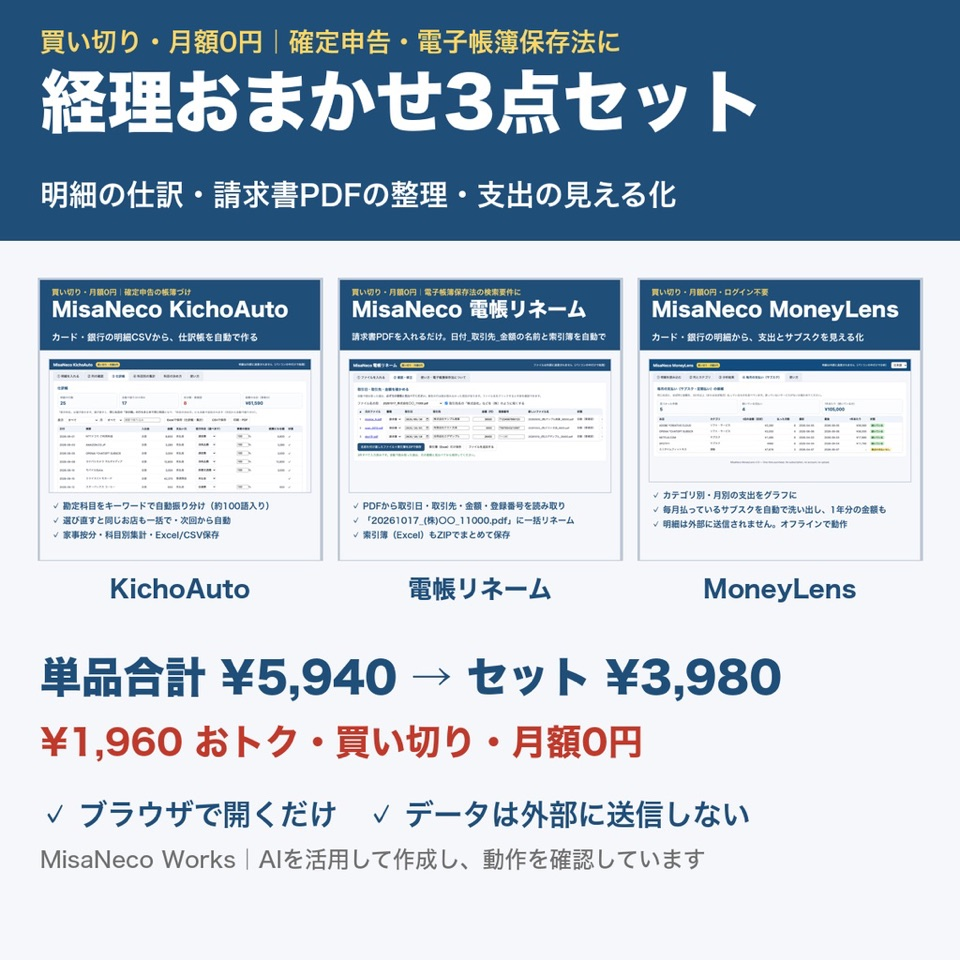

経理・事務の業務ツール、どれを選ぶ？
帳簿づけ・請求書・入金の確認・勤怠。困っていることから、合うツールを選べます。
迷ったらこれ

セット
BOOTHで見る
経理おまかせ3点セット
帳簿づけと書類の整理に使う3本のセットです（KichoAuto・電帳リネーム・MoneyLens）。
¥3,980
| 単品3本を別々に買った合計 | ¥5,940 |
| セットの価格 | ¥3,980 |
| 差額 | ¥1,960 |
MisaNeco オールインワン（20本） ¥9,800
下の表の有料ツール8本（勤怠集計・入金消込チェッカー・請求書一括作成・PDF→Excel・DataClean など）を含む20本のセットです。セキュリティやデータ集計のツールも入っています。
BOOTHで見る
下の表の有料ツール8本（勤怠集計・入金消込チェッカー・請求書一括作成・PDF→Excel・DataClean など）を含む20本のセットです。セキュリティやデータ集計のツールも入っています。
BOOTHで見る
困りごとから選ぶ
1本ずつでも買えます。リンクはBOOTHの商品ページです。
| 困りごと | 合うツール・楽になること | 価格 | |
|---|---|---|---|
| カード・銀行の明細から帳簿をつけるのに時間がかかる | MisaNeco KichoAutoブラウザ 明細のCSV・Excelから、お店の名前などで勘定科目を振り分けて仕訳帳を作成。家事按分・科目別の集計、Excel保存。 |
¥1,980 | BOOTHで見る |
| 何にいくら使っているか、どのサブスクを払っているかわからない | MisaNeco MoneyLensブラウザ 明細のCSVから、支出をカテゴリ別・月別に表示。毎月払っているもの（サブスク）を洗い出し、1年あたりの金額も。 |
¥1,980 | BOOTHで見る |
| 毎月、何社もの請求書を1枚ずつ作っている | MisaNeco 請求書一括作成ブラウザ 明細の一覧から、取引先ごとにインボイス対応の請求書をまとめて作成し、PDFで保存。税率ごとの合計と消費税も記載。 |
¥1,980 | BOOTHで見る |
| 通帳と請求書を見比べて、入金を確かめている | MisaNeco 入金消込チェッカーブラウザ 請求書の一覧と銀行明細を、振込名義と金額で照合。入金済み・手数料差引・未入金・期日超過を色分けして一覧に。 |
¥1,980 | BOOTHで見る |
| 受け取った請求書PDFのファイル名を手で打ち直している | MisaNeco 電帳リネームブラウザ 文字が選べるPDFから日付・取引先・金額を読み取り、「日付_取引先_金額」のファイル名と索引簿（Excel）をまとめて作成。 |
¥1,980 | BOOTHで見る |
| 月末の勤怠の締めを電卓や手作業でやっている | MisaNeco 勤怠集計ブラウザ タイムカードのCSV・Excelから、個人別の実働・時間外・深夜・法定休日の時間を集計。休憩不足や打刻もれも知らせる。 |
¥1,980 | BOOTHで見る |
| PDFの明細や一覧表を、Excelに打ち直している | MisaNeco PDF→Excelブラウザ 文字が選べるPDFの表を、行と列にしてExcel・CSVで保存。金額は数値にするので、そのまま合計に使える（スキャン画像は不可）。 |
¥2,480 | BOOTHで見る |
| 顧客名簿の電話番号・日付の書き方がばらばら | MisaNeco DataCleanブラウザ 電話番号・郵便番号・和暦の日付・メールの表記をそろえ、重複を消す。直したセルは色で表示し、変更の記録も保存。 |
¥1,980 | BOOTHで見る |
| 会計ソフトなどのCSVをExcelで開くと文字化けする | CSV文字化けなおし（無料）ブラウザ CSVをドラッグすると文字コードを見分け、Excelでそのまま開ける形で別名保存。元のファイルは変更しません。 |
無料 | BOOTHで見る |
実際に触れる見本
買う前に、同じ計算のしかたの見本をブラウザで動かせます。
経理・事務スタジオ →明細の取り込みと仕訳 → 請求書 → 入金の照合 → 勤怠 → 月次まとめ。下のツールと同じ計算のしかたで、ブラウザで実際に入力して試せます。ご注意
- この表のツールは、HTMLファイルをブラウザ（Google Chrome・Microsoft Edge。ツールによってはSafariも可）で開いて使います。インストールもログインも要りません。
- Excel・CSVのファイルを読み込み、結果はExcel・CSV・PDFで保存できます。Googleスプレッドシートで使うときは、保存したファイルを取り込んでください。
- 入れた明細・書類は、お使いのパソコンの中で処理され、外部には送信されません。
- 見本のデータ（会社・人・取引先・金額）はすべて架空です。
- 科目の選び方・按分・インボイス・電子帳簿保存法など税の扱いの最終確認は、国税庁の案内・税理士へ。勤怠の時間外の扱いは社会保険労務士などにご確認ください。